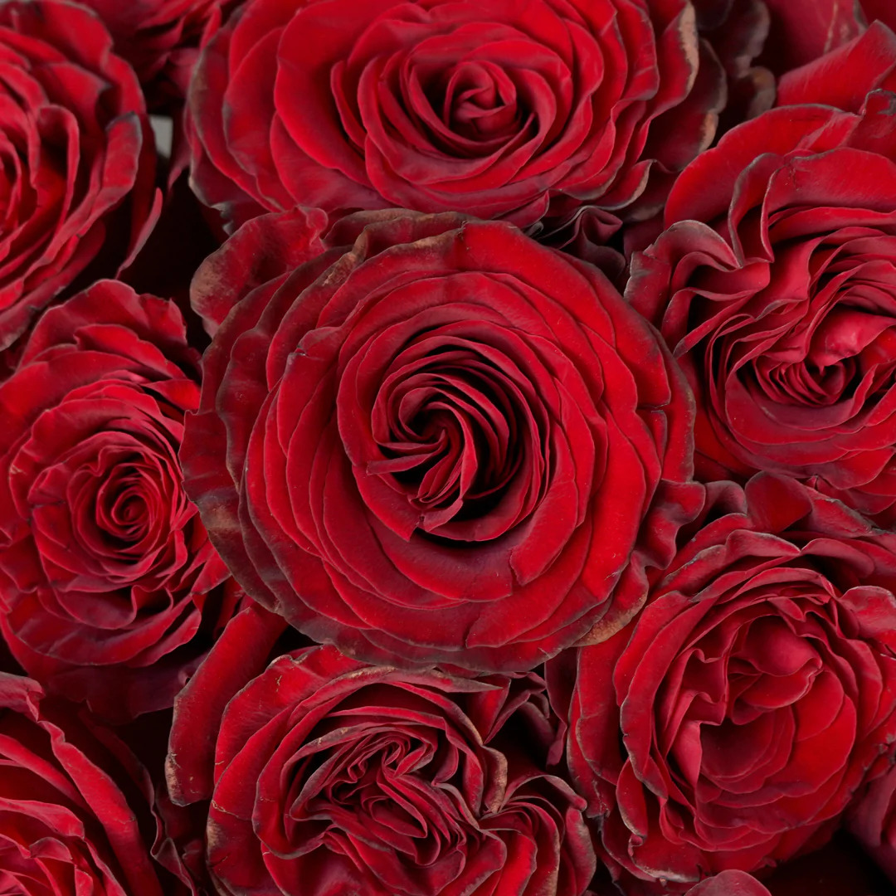
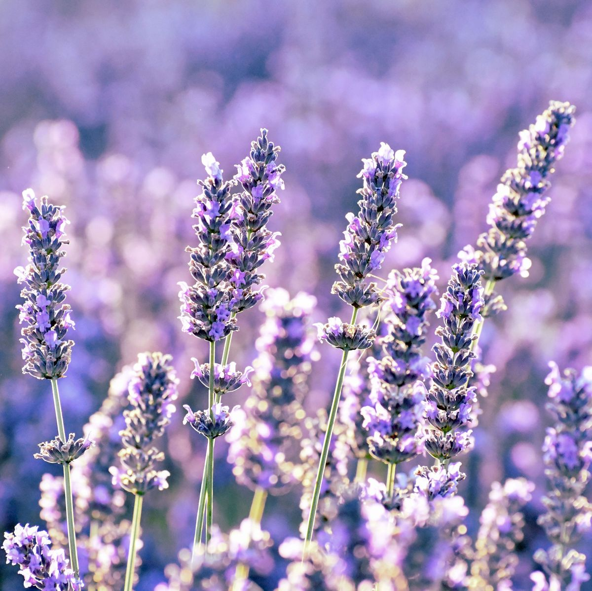
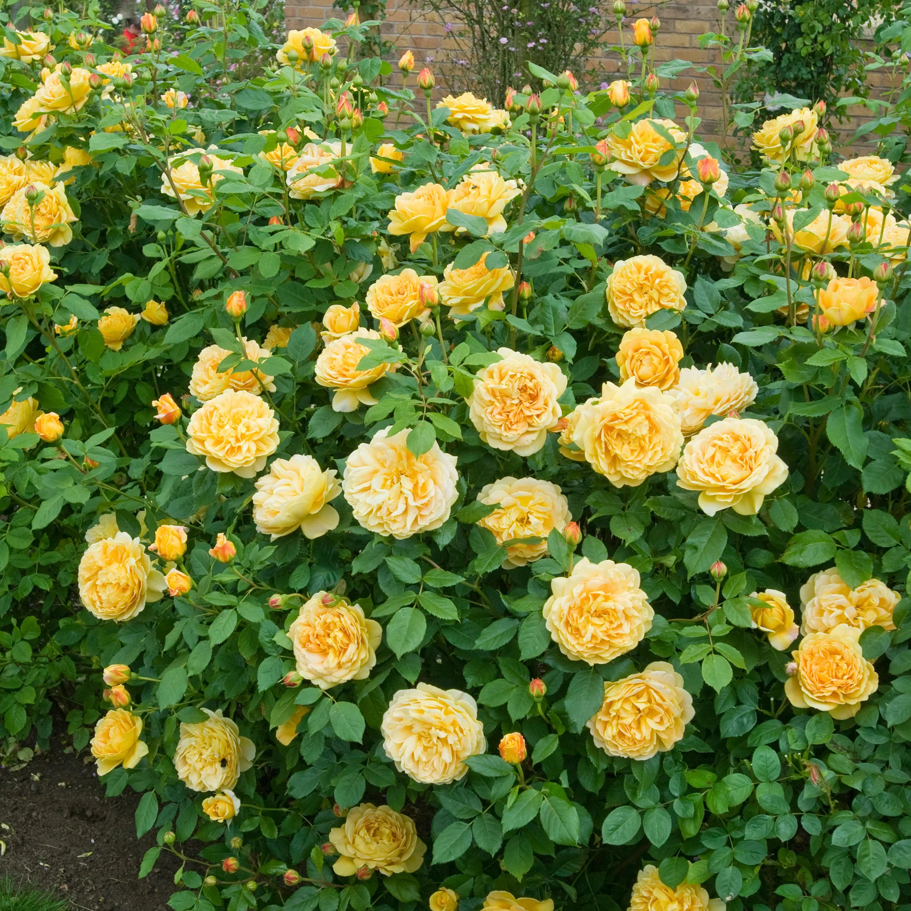
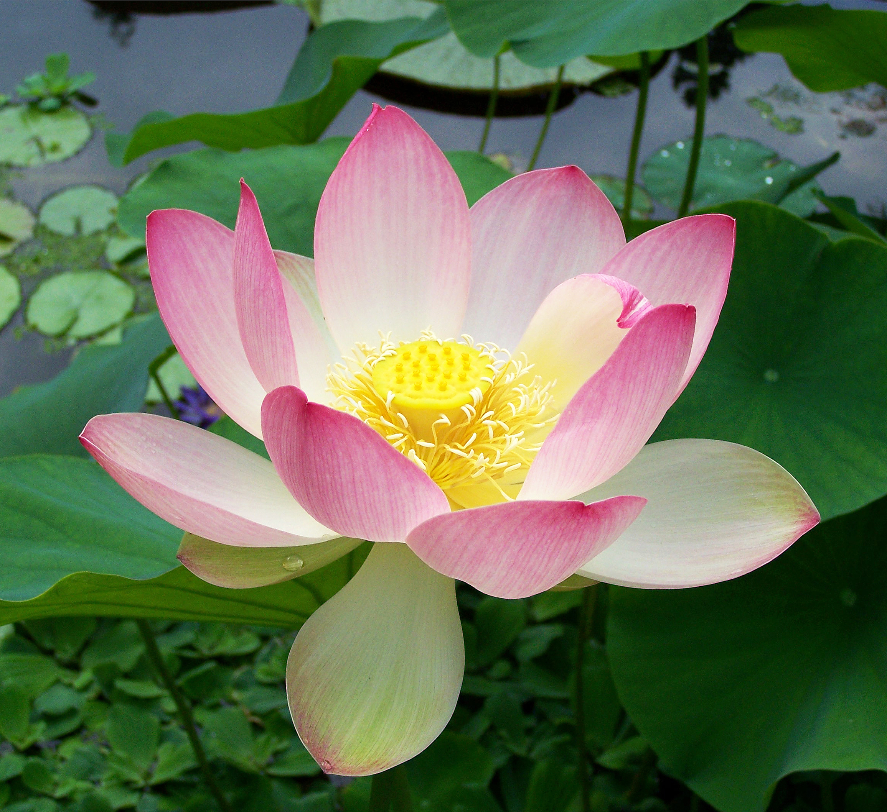
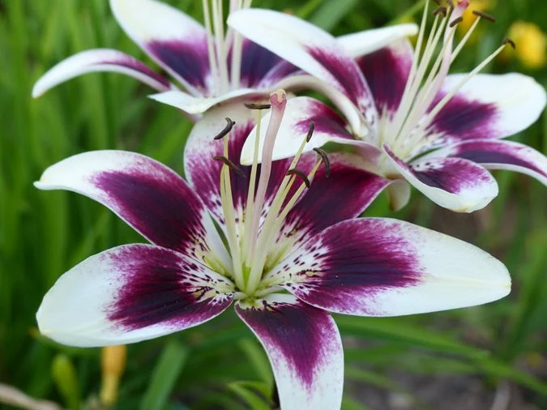
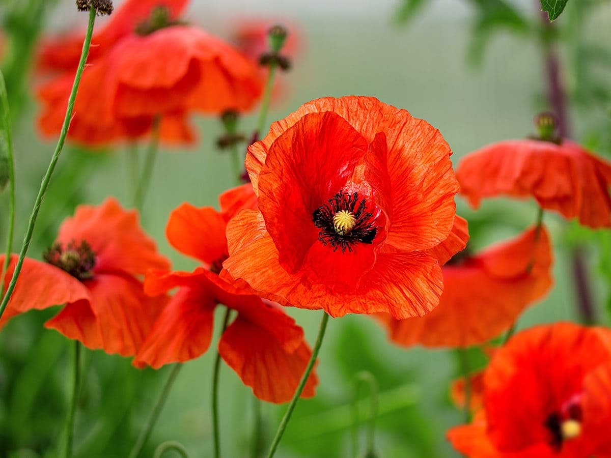
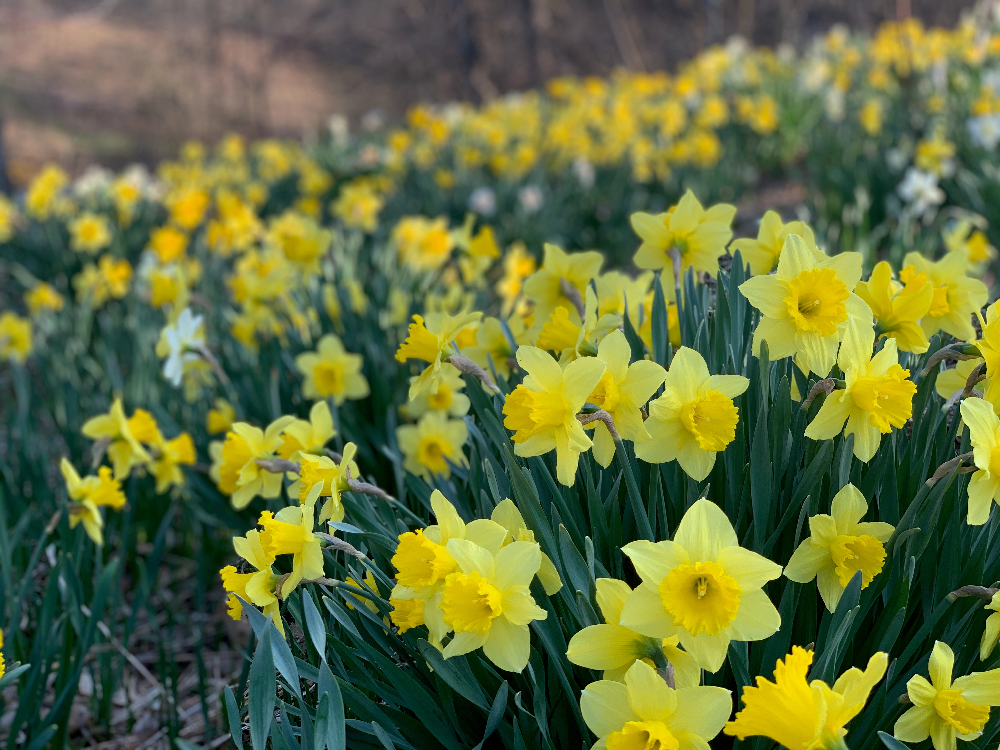
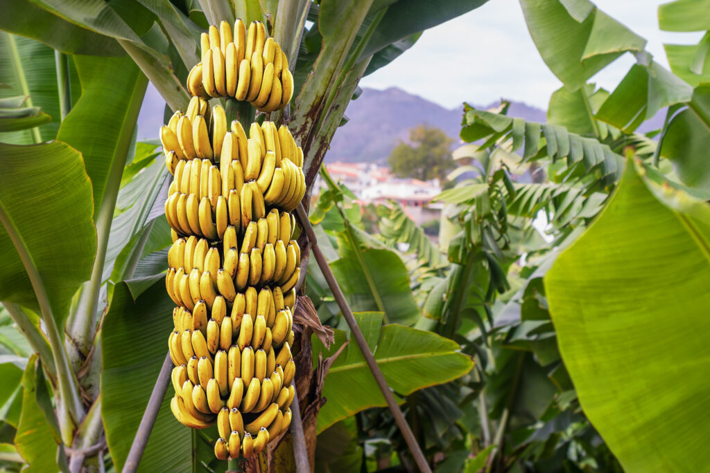

Crested Fern
Crested ferns, also known as 'Cristata' or 'Crested' ferns, are a unique and fascinating species of fern that have a distinct and striking appearance. These ferns are notable for the crested tips that grow from the top of each frond, giving them a distinctive look that sets them apart from other types of ferns.
One of the most interesting aspects of crested ferns is that they are actually a genetic mutation of other fern species, rather than a separate species in their own right. This means that they can occur in a variety of different fern species, although some are more commonly found with crested tips than others.
In terms of their appearance, crested ferns are typically a medium to dark green color, with the crested tips ranging in size from small to quite large and dramatic. They can be grown both indoors and outdoors, depending on the specific species, and are a popular choice for those looking for a unique and eye-catching plant to add to their collection.
Crested ferns are generally quite easy to care for, requiring moderate amounts of water and humidity, as well as a well-draining soil mix. They prefer bright, indirect light and will typically thrive in areas with moderate temperatures.
One of the benefits of growing crested ferns is that they are relatively low-maintenance and can add a touch of elegance and sophistication to any room or garden. They are also quite versatile and can be grown in a variety of different containers, including hanging baskets, pots, and even terrariums.
Overall, crested ferns are a fascinating and unique plant that is well worth considering for anyone looking to add a touch of natural beauty and interest to their home or garden. Whether you are an experienced gardener or simply looking to try your hand at growing something new, these ferns are a great choice that is sure to delight and impress.
One of the most interesting aspects of crested ferns is that they are actually a genetic mutation of other fern species, rather than a separate species in their own right. This means that they can occur in a variety of different fern species, although some are more commonly found with crested tips than others.
In terms of their appearance, crested ferns are typically a medium to dark green color, with the crested tips ranging in size from small to quite large and dramatic. They can be grown both indoors and outdoors, depending on the specific species, and are a popular choice for those looking for a unique and eye-catching plant to add to their collection.
Crested ferns are generally quite easy to care for, requiring moderate amounts of water and humidity, as well as a well-draining soil mix. They prefer bright, indirect light and will typically thrive in areas with moderate temperatures.
One of the benefits of growing crested ferns is that they are relatively low-maintenance and can add a touch of elegance and sophistication to any room or garden. They are also quite versatile and can be grown in a variety of different containers, including hanging baskets, pots, and even terrariums.
Overall, crested ferns are a fascinating and unique plant that is well worth considering for anyone looking to add a touch of natural beauty and interest to their home or garden. Whether you are an experienced gardener or simply looking to try your hand at growing something new, these ferns are a great choice that is sure to delight and impress.

Red Roses
Red roses are one of the most iconic and timeless flowers in the world, known for their beauty, fragrance, and symbolism. With their deep crimson petals and lush, velvety texture, they have captured the hearts and imaginations of people around the world for centuries.
Red roses are often associated with love and romance, and have long been a popular choice for wedding bouquets, Valentine's Day gifts, and other special occasions. However, they also have a long and rich history that extends beyond these modern-day associations.
Originally grown in ancient China, red roses were later brought to Europe, where they became popular among royalty and the wealthy. Today, they are cultivated all over the world, with different varieties and species offering their own unique colors, scents, and shapes.
When it comes to care, red roses are relatively easy to grow and maintain. They prefer full sun and well-draining soil, and require regular watering and pruning to ensure healthy growth. With the right care, they can thrive in a variety of settings, from outdoor gardens to indoor planters.
In addition to their aesthetic appeal, red roses also offer a range of potential health benefits. Some studies have suggested that they may have anti-inflammatory properties, while others have explored their potential role in improving mood and reducing stress.
Overall, red roses are a beloved and iconic flower that continues to capture the hearts and imaginations of people around the world. Whether given as a gift or grown in a garden, they are a symbol of love, beauty, and the enduring power of nature.
Red roses are often associated with love and romance, and have long been a popular choice for wedding bouquets, Valentine's Day gifts, and other special occasions. However, they also have a long and rich history that extends beyond these modern-day associations.
Originally grown in ancient China, red roses were later brought to Europe, where they became popular among royalty and the wealthy. Today, they are cultivated all over the world, with different varieties and species offering their own unique colors, scents, and shapes.
When it comes to care, red roses are relatively easy to grow and maintain. They prefer full sun and well-draining soil, and require regular watering and pruning to ensure healthy growth. With the right care, they can thrive in a variety of settings, from outdoor gardens to indoor planters.
In addition to their aesthetic appeal, red roses also offer a range of potential health benefits. Some studies have suggested that they may have anti-inflammatory properties, while others have explored their potential role in improving mood and reducing stress.
Overall, red roses are a beloved and iconic flower that continues to capture the hearts and imaginations of people around the world. Whether given as a gift or grown in a garden, they are a symbol of love, beauty, and the enduring power of nature.

Lavendar
Lavender is a fragrant and versatile herb that has been used for centuries in culinary, medicinal, and decorative applications. With its delicate purple flowers and sweet, floral scent, it is a beloved and popular plant that is cherished by gardeners and herbalists alike.
Lavender is native to the Mediterranean region, but is now cultivated all over the world. Its essential oils and extracts are often used in aromatherapy and natural health remedies, as well as in a variety of cosmetic and beauty products.
In the garden, lavender is relatively easy to grow and maintain, requiring well-draining soil, plenty of sunlight, and moderate watering. It is a hardy and resilient plant that can thrive in a variety of settings, from outdoor gardens to indoor planters.
Aside from its aromatic and decorative properties, lavender also offers a range of potential health benefits. Its essential oils are believed to have antiseptic, anti-inflammatory, and relaxing properties, and it has been used for centuries to soothe headaches, anxiety, and other ailments.
Lavender is also a popular culinary herb, and can be used to add a delicate floral flavor to a variety of dishes, from sweet desserts to savory main courses. Its flowers can also be used to make teas, infusions, and other beverages.
Overall, lavender is a beloved and versatile herb that offers a wide range of benefits and applications. Whether grown in a garden, used in aromatherapy, or added to a delicious meal, it is a plant that is cherished by many for its beauty, fragrance, and natural properties.
Lavender is native to the Mediterranean region, but is now cultivated all over the world. Its essential oils and extracts are often used in aromatherapy and natural health remedies, as well as in a variety of cosmetic and beauty products.
In the garden, lavender is relatively easy to grow and maintain, requiring well-draining soil, plenty of sunlight, and moderate watering. It is a hardy and resilient plant that can thrive in a variety of settings, from outdoor gardens to indoor planters.
Aside from its aromatic and decorative properties, lavender also offers a range of potential health benefits. Its essential oils are believed to have antiseptic, anti-inflammatory, and relaxing properties, and it has been used for centuries to soothe headaches, anxiety, and other ailments.
Lavender is also a popular culinary herb, and can be used to add a delicate floral flavor to a variety of dishes, from sweet desserts to savory main courses. Its flowers can also be used to make teas, infusions, and other beverages.
Overall, lavender is a beloved and versatile herb that offers a wide range of benefits and applications. Whether grown in a garden, used in aromatherapy, or added to a delicious meal, it is a plant that is cherished by many for its beauty, fragrance, and natural properties.

Yellow Roses
Yellow roses are a bright and sunny addition to any garden or bouquet. These cheerful flowers are known for their vibrant yellow color, which can range from a pale lemon to a deep, golden hue. They are often associated with friendship, happiness, and joy, and are a popular choice for many different occasions.
Like other roses, yellow roses are relatively easy to grow and maintain. They prefer well-draining soil and plenty of sunlight, and require regular watering and pruning to promote healthy growth. With the right care, they can thrive in a variety of settings, from outdoor gardens to indoor planters.
Yellow roses are available in a range of different species and varieties, each with their own unique characteristics and qualities. Some have a sweet, citrusy fragrance, while others have a more subtle scent. Some are compact and bushy, while others grow tall and vine-like.
In addition to their aesthetic appeal, yellow roses also offer a range of potential health benefits. Some studies have suggested that the essential oils found in roses may have anti-inflammatory and antimicrobial properties, while others have explored their potential role in reducing stress and anxiety.
Overall, yellow roses are a cheerful and uplifting flower that brings a touch of sunshine to any setting. Whether given as a gift or grown in a garden, they are a symbol of friendship, happiness, and the joy of life.
Like other roses, yellow roses are relatively easy to grow and maintain. They prefer well-draining soil and plenty of sunlight, and require regular watering and pruning to promote healthy growth. With the right care, they can thrive in a variety of settings, from outdoor gardens to indoor planters.
Yellow roses are available in a range of different species and varieties, each with their own unique characteristics and qualities. Some have a sweet, citrusy fragrance, while others have a more subtle scent. Some are compact and bushy, while others grow tall and vine-like.
In addition to their aesthetic appeal, yellow roses also offer a range of potential health benefits. Some studies have suggested that the essential oils found in roses may have anti-inflammatory and antimicrobial properties, while others have explored their potential role in reducing stress and anxiety.
Overall, yellow roses are a cheerful and uplifting flower that brings a touch of sunshine to any setting. Whether given as a gift or grown in a garden, they are a symbol of friendship, happiness, and the joy of life.

Lotus Flower
Lotus flowers are a stunning and symbolic plant that have captivated people for centuries. Known for their delicate, multi-petaled blossoms and large, flat leaves, they are often associated with purity, enlightenment, and spiritual awakening.
Lotus flowers are native to Asia, where they are found in freshwater ponds and rivers. They are often used in traditional medicine and cooking, with the plant's seeds, roots, and leaves offering a range of potential health benefits.
In addition to their medicinal and culinary properties, lotus flowers are also valued for their aesthetic beauty. They are a popular choice for water gardens and other aquatic settings, where their lush foliage and vibrant blooms can thrive in moist soil and shallow water.
Lotus flowers are also rich in symbolism and cultural significance. In Hindu and Buddhist traditions, the lotus is often seen as a symbol of purity and spiritual growth, with the flower representing the journey towards enlightenment and transcendence.
When it comes to care, lotus flowers require a bit of attention and effort, but can be rewarding for those who are willing to put in the work. They prefer full sun and warm temperatures, and require regular fertilization and pruning to promote healthy growth.
Overall, lotus flowers are a beautiful and symbolic plant that offers a range of benefits and applications. Whether grown in a water garden, used in traditional medicine, or appreciated for their cultural significance, they are a beloved and cherished part of many different traditions and cultures around the world.
Lotus flowers are native to Asia, where they are found in freshwater ponds and rivers. They are often used in traditional medicine and cooking, with the plant's seeds, roots, and leaves offering a range of potential health benefits.
In addition to their medicinal and culinary properties, lotus flowers are also valued for their aesthetic beauty. They are a popular choice for water gardens and other aquatic settings, where their lush foliage and vibrant blooms can thrive in moist soil and shallow water.
Lotus flowers are also rich in symbolism and cultural significance. In Hindu and Buddhist traditions, the lotus is often seen as a symbol of purity and spiritual growth, with the flower representing the journey towards enlightenment and transcendence.
When it comes to care, lotus flowers require a bit of attention and effort, but can be rewarding for those who are willing to put in the work. They prefer full sun and warm temperatures, and require regular fertilization and pruning to promote healthy growth.
Overall, lotus flowers are a beautiful and symbolic plant that offers a range of benefits and applications. Whether grown in a water garden, used in traditional medicine, or appreciated for their cultural significance, they are a beloved and cherished part of many different traditions and cultures around the world.

Lily Flower
Lilies are a stunning and elegant flower that are cherished for their beauty, fragrance, and symbolism. With their large, showy blooms and wide range of colors, they are a popular choice for gardens, weddings, and other special occasions.
Lilies are native to the temperate regions of the Northern Hemisphere, and can be found in a variety of different species and varieties. Some of the most common types of lilies include Asiatic lilies, Easter lilies, and Oriental lilies, each with their own unique characteristics and qualities.
One of the most striking things about lilies is their range of colors and patterns. They come in a wide range of shades, from pure white and delicate pink to vibrant red, orange, and yellow. They are also often adorned with intricate patterns and markings, such as spots, stripes, and speckles.
In addition to their beauty, lilies also have a range of potential health benefits. They are often used in traditional medicine, with the plant's roots, leaves, and flowers offering a range of potential therapeutic properties.
Overall, lilies are a beloved and cherished flower that represents purity, beauty, and rebirth. Whether used in a bouquet, grown in a garden, or appreciated for their cultural significance, they are a symbol of hope and renewal that has captivated people for centuries.
Lilies are native to the temperate regions of the Northern Hemisphere, and can be found in a variety of different species and varieties. Some of the most common types of lilies include Asiatic lilies, Easter lilies, and Oriental lilies, each with their own unique characteristics and qualities.
One of the most striking things about lilies is their range of colors and patterns. They come in a wide range of shades, from pure white and delicate pink to vibrant red, orange, and yellow. They are also often adorned with intricate patterns and markings, such as spots, stripes, and speckles.
In addition to their beauty, lilies also have a range of potential health benefits. They are often used in traditional medicine, with the plant's roots, leaves, and flowers offering a range of potential therapeutic properties.
Overall, lilies are a beloved and cherished flower that represents purity, beauty, and rebirth. Whether used in a bouquet, grown in a garden, or appreciated for their cultural significance, they are a symbol of hope and renewal that has captivated people for centuries.

Poppy Flower
Poppy flowers are a unique and striking plant that are known for their vibrant colors and distinctive shape. With their delicate, papery petals and bold, contrasting centers, they are a popular choice for gardens, wildflower meadows, and floral arrangements.
Poppies are native to many parts of the world, and can be found in a variety of different species and varieties. Some of the most common types of poppies include the Oriental poppy, California poppy, and the opium poppy, each with their own unique characteristics and qualities.
One of the most striking things about poppy flowers is their bright, bold colors. They come in a range of shades, from bright red and orange to soft pink, lavender, and white. They are often used to add a pop of color to gardens and floral arrangements, and are beloved for their unique, intricate shapes.
In addition to their aesthetic appeal, poppy flowers also have a range of potential health benefits. Some studies have suggested that the plant's seeds, roots, and other parts may offer pain relief, improve sleep quality, and even reduce anxiety and stress.
Despite their many positive qualities, poppies can also be highly toxic when ingested. Some species, such as the opium poppy, are grown specifically for their psychoactive properties, and are highly regulated and controlled by law.
Overall, poppy flowers are a unique and beloved plant that have captured the imagination of people around the world. Whether grown in a garden, used in traditional medicine, or appreciated for their cultural significance, they are a symbol of beauty, resilience, and the power of nature.
Poppies are native to many parts of the world, and can be found in a variety of different species and varieties. Some of the most common types of poppies include the Oriental poppy, California poppy, and the opium poppy, each with their own unique characteristics and qualities.
One of the most striking things about poppy flowers is their bright, bold colors. They come in a range of shades, from bright red and orange to soft pink, lavender, and white. They are often used to add a pop of color to gardens and floral arrangements, and are beloved for their unique, intricate shapes.
In addition to their aesthetic appeal, poppy flowers also have a range of potential health benefits. Some studies have suggested that the plant's seeds, roots, and other parts may offer pain relief, improve sleep quality, and even reduce anxiety and stress.
Despite their many positive qualities, poppies can also be highly toxic when ingested. Some species, such as the opium poppy, are grown specifically for their psychoactive properties, and are highly regulated and controlled by law.
Overall, poppy flowers are a unique and beloved plant that have captured the imagination of people around the world. Whether grown in a garden, used in traditional medicine, or appreciated for their cultural significance, they are a symbol of beauty, resilience, and the power of nature.

Daffodil Flower
Daffodil flowers are a beloved and iconic springtime bloom that are cherished for their bright, cheerful colors and unique trumpet-shaped blooms. With their delicate, papery petals and bold, contrasting centers, they are a popular choice for gardens, bouquets, and other floral arrangements.
Daffodils are native to Europe and Asia, but have been widely cultivated and naturalized throughout the world. They are a hardy and resilient plant, able to thrive in a range of different conditions and climates.
One of the most striking things about daffodil flowers is their vibrant, sunny colors. They come in a range of shades, from bright yellow and golden orange to soft, delicate pink and white. They are often used to add a burst of color to gardens and landscapes, and are a beloved sign of spring and renewal.
In addition to their aesthetic appeal, daffodils are also rich in symbolism and cultural significance. They are often associated with new beginnings, hope, and rebirth, and are a popular choice for Easter and other springtime celebrations.
When it comes to care, daffodils are a relatively easy plant to grow and maintain. They prefer well-drained soil and full sun or partial shade, and should be planted in the fall for optimal growth and bloom in the spring.
Overall, daffodil flowers are a beloved and cherished part of springtime that offer a range of benefits and applications. Whether grown in a garden, used in floral arrangements, or appreciated for their cultural significance, they are a symbol of beauty, resilience, and the power of nature.
Daffodils are native to Europe and Asia, but have been widely cultivated and naturalized throughout the world. They are a hardy and resilient plant, able to thrive in a range of different conditions and climates.
One of the most striking things about daffodil flowers is their vibrant, sunny colors. They come in a range of shades, from bright yellow and golden orange to soft, delicate pink and white. They are often used to add a burst of color to gardens and landscapes, and are a beloved sign of spring and renewal.
In addition to their aesthetic appeal, daffodils are also rich in symbolism and cultural significance. They are often associated with new beginnings, hope, and rebirth, and are a popular choice for Easter and other springtime celebrations.
When it comes to care, daffodils are a relatively easy plant to grow and maintain. They prefer well-drained soil and full sun or partial shade, and should be planted in the fall for optimal growth and bloom in the spring.
Overall, daffodil flowers are a beloved and cherished part of springtime that offer a range of benefits and applications. Whether grown in a garden, used in floral arrangements, or appreciated for their cultural significance, they are a symbol of beauty, resilience, and the power of nature.

Banana Tree
Banana trees are a tall, lush, and exotic plant that are known for their tropical foliage and delicious fruit. With their large, fan-like leaves and distinctive flower clusters, they are a popular choice for gardens, landscaping, and agriculture.
Banana trees are native to the tropical regions of Southeast Asia, but have been widely cultivated and naturalized throughout the world. They are a hardy and resilient plant, able to thrive in a range of different conditions and climates, and are commonly found in tropical and subtropical regions.
One of the most striking things about banana trees is their impressive size and growth rate. They can reach heights of up to 30 feet or more, and can produce a large number of fruit in a relatively short amount of time.
In addition to their aesthetic appeal, banana trees are also a rich source of nutrition and economic value. The plant's fruit is a staple food for millions of people around the world, and is rich in vitamins, minerals, and fiber. The leaves and stem of the plant can also be used for a range of applications, such as food wrapping, roofing materials, and paper production.
When it comes to care, banana trees require regular watering and nutrient-rich soil to thrive. They also benefit from full sun or partial shade, and should be protected from frost and extreme temperatures.
Overall, banana trees are a beloved and cherished part of many cultures and landscapes around the world. Whether grown for their fruit, used for their cultural and economic value, or appreciated for their tropical beauty, they are a symbol of abundance, growth, and the power of nature.
Banana trees are native to the tropical regions of Southeast Asia, but have been widely cultivated and naturalized throughout the world. They are a hardy and resilient plant, able to thrive in a range of different conditions and climates, and are commonly found in tropical and subtropical regions.
One of the most striking things about banana trees is their impressive size and growth rate. They can reach heights of up to 30 feet or more, and can produce a large number of fruit in a relatively short amount of time.
In addition to their aesthetic appeal, banana trees are also a rich source of nutrition and economic value. The plant's fruit is a staple food for millions of people around the world, and is rich in vitamins, minerals, and fiber. The leaves and stem of the plant can also be used for a range of applications, such as food wrapping, roofing materials, and paper production.
When it comes to care, banana trees require regular watering and nutrient-rich soil to thrive. They also benefit from full sun or partial shade, and should be protected from frost and extreme temperatures.
Overall, banana trees are a beloved and cherished part of many cultures and landscapes around the world. Whether grown for their fruit, used for their cultural and economic value, or appreciated for their tropical beauty, they are a symbol of abundance, growth, and the power of nature.